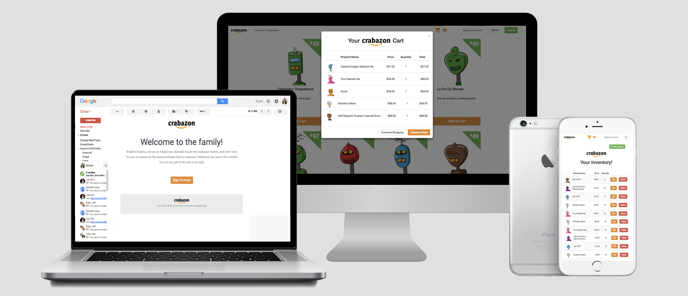

During my 6 month period at Dev Bootcamp I worked on a number of group/pair projects and challenges. We were asked to re build mini versions of Twitter, Craig's List and other famous sites using multiple languages and frameworks. This particular project was based on the Amazon shopping site. The pair had to work with a client and bring the project through four iterations. For this particular assignment we used Ruby on Rails, Java Script, Ruby, HTML & CSS. We additionally, worked in HAML and with the jQuery Ajax methods.
Our client requested that we build a shopping site similar to Amazon. This included an inventory management section for admin use only. User had to be able to browse through products in a grid like fashion and add to cart when they desired. User authentication was required, as well as emails sent when registering and checking out. We also were requested to disable the ability to add products when stock quantity was exceeded. An admin had to be able to add products to multiple categories, as well as edit and delete them. The site had to also be mobile friendly.